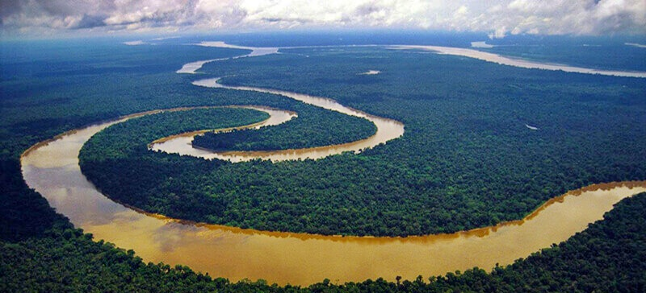

Африка, Нил

Нил — крупнейшая по протяжённости река в Африке, одна из величайших по протяжённости речных систем в мире. Слово «Нил» происходит от греческого названия реки «Нейлос».
Река берёт начало на Восточно-Африканском плоскогорье и впадает в Средиземное море, образуя дельту площадью 24 тыс. км². Среднегодовой расход воды в устье Нила 2900 м³/с. В верхнем течении принимает крупные притоки — Эль-Газаль (левый) и Асуа, Собат, ГолубойНил и Атбара (правые). Ниже устья правого притока Атбары Нил течёт по полупустыне, не имея притоков (кроме временных рек) на протяжении последних 3000 км
Водная система Нила считается самой длинной на Земле. Однако, по мнению бразильских исследователей, самая длинная речная система у Амазонки — по этим данным, её длина составляет 6992 километра, в то время как длина системы Нила — 6852 километра. Площадь бассейна реки Нил составляет 3349 тыс. км². Исток находится в Руанде, это река Рукарара, впадающая в реку Кагера. Сток воды сильно и резко изменяется в течение года. Суммарная длина судоходных участков составляет 3200 км. Воды реки используются для орошения и производства электроэнергии. В дельте и долине Нила проживает почти всё население и базируется почти вся экономика Египта. Крупнейшими городами являются Каир, Хартум, Асуан, Александрия.